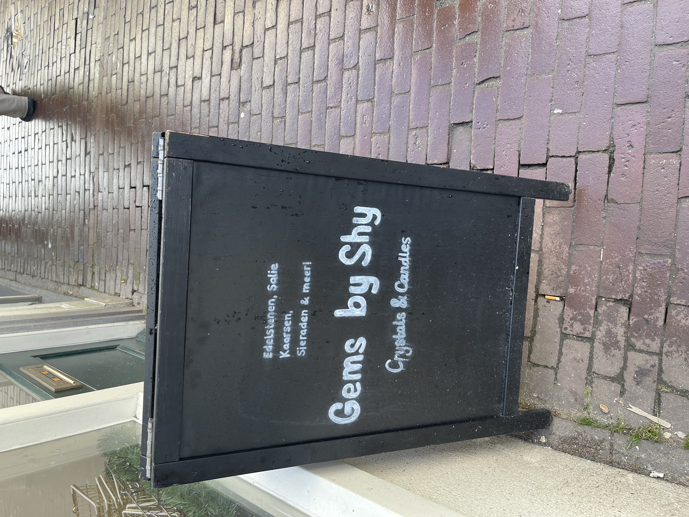
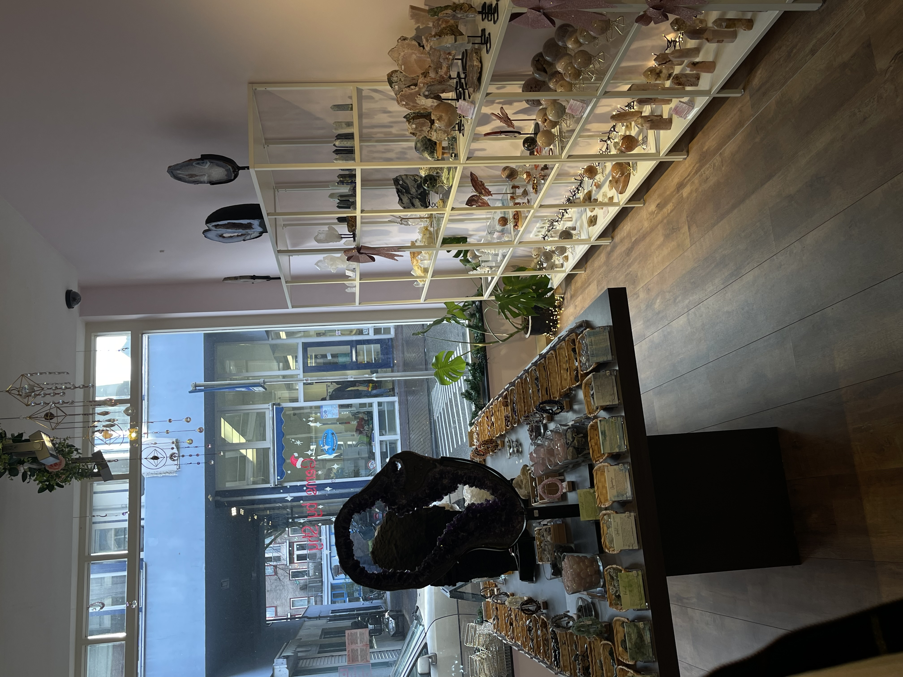
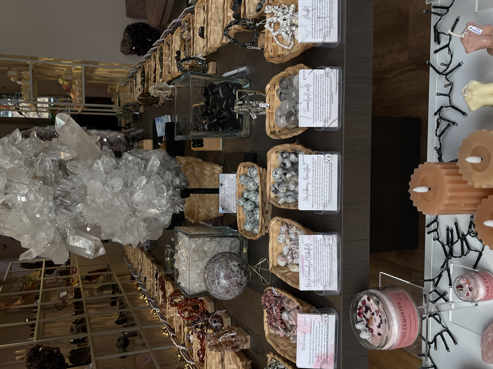
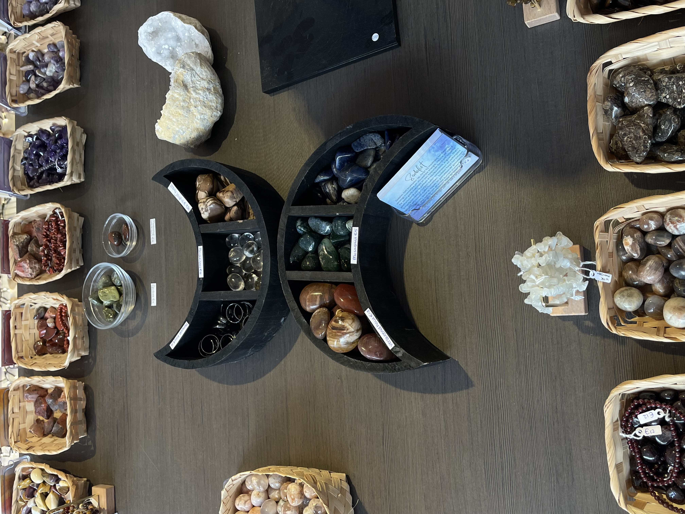

Gems By Shy

Gems By Shy is een klein edelsteen winkeltje die te vinden is op: Haarlemmerdijk 33 (1013 KA). Het winkeltje zit dus echt lekker in hartje Amsterdam en is daarom ook nummer 2 op de lijst. De winkel is de perfecte plek om even een kijkje te nemen voor leuke edelstenen en sieraden.
Je kan onderandere niet alleen edelstenen kopen hier, maar ook zelf gemaakte geurkaarsen en sieraden.
Pro's van de winkel
Het winkeltje is erg makkelijk bereikbaar met het openbaar vervoer het is vanaf de halte 'Buiten Oranjestraat' maar 3 minuten lopen naar de winkel wat heel voordelig is voor toeristen.
Gems By Shy heeft bij elke edelsteen die ze verkopen ook kleine kaartjes voor de stenen staan met wat korte informatie over de edelsteen en waarvoor ze staan of gebruikt worden, wat erg leuk en handig is. De kaartjes zijn in het engels en dus erg goed voor toeristen.
Duurzaamheid
Gems By Shy is niet alleen door haar locatie nummer 2 op de lijst, van alle winkeltjes is deze de meest duurzaam, zo gebruikt de winkel geen plastic voor bestellingen inpakken en is de hele winkel dus plastic vrij. Verder zijn alle edelstenen duurzaam en op een eerlijke manier geleverd wat ook zeker te voelen is in de zweer van de winkel! Ook zijn de edelstenen zeer goede kwaliteit en erg mooi.
Mijn Mening
Mijn eerste indruk van de winkel was vooral dat het erg rustgevend en kalm was, wel vind ik dat de inrichting van de winkel wat saai is en wat decoratie mist, het had naar mijn mening niet echt een spirituele uitstraling naast de edelstenen, het past wel weer erg goed met de zweer van de winkel zelf. De stenen zijn erg mooi en worden verkocht voor een prima prijs! de eigenaar Shy is een hele aardige vrouw en een hele lieve verkoopster. De kaarsen die de winkel verkoopt vind ik ook erg leuk en uniek. kortom vind ik dat deze winkel de 2e plek op de zweefgids zeker verdient en geef ik de winkel een goede 7/10.